Console Translator: Dịch game
Chơi game nào cũng hiểu
Dịch phụ đề game sang tiếng Việt trên máy tính. PC WINDOWS
Tham gia cộng đồng
Thông báo bản mới, nơi hỏi đáp và báo lỗi. Mã dùng app PC lấy ở bot Telegram.
Làm lần lượt từng bước, bấm vào bước để mở. Bước 1 đến 8 chỉ làm một lần.
1Cài app trên PC
- Tải bộ cài ở nút Tải bộ cài PC phía trên (file
ConsoleTranslator-PC-…-Setup.exe). - Mở file. Windows hiện màn hình xanh “Windows đã bảo vệ PC của bạn” thì bấm Thông tin thêm (More info) → Vẫn chạy (Run anyway).
- Bấm Tiếp đến hết. Bộ cài tự cài thêm WebView2 nếu máy còn thiếu.
- Mở Console Translator từ menu Start.
- App hỏi mã: mở bot Telegram, bấm App PC (Windows) để nhận mã, dán vào app.
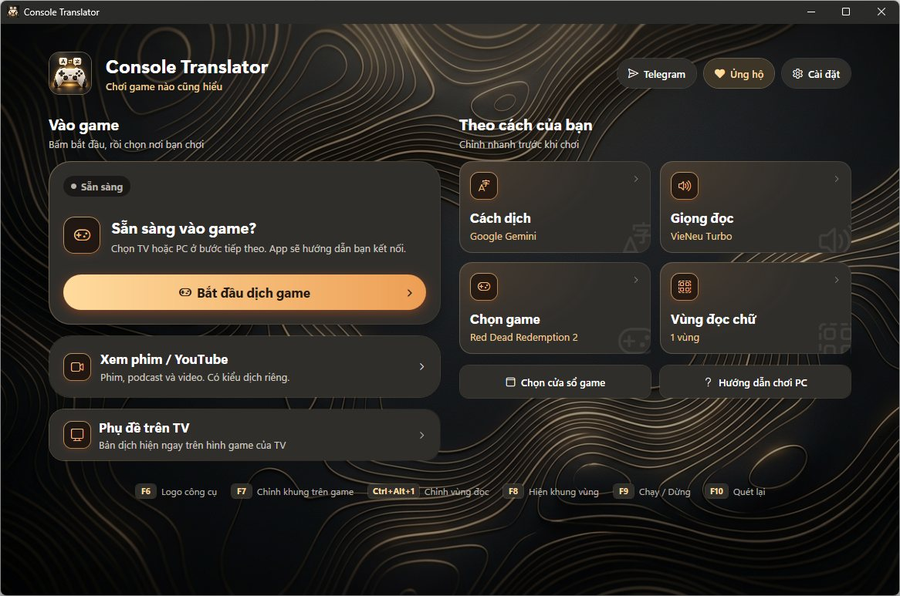
2Thêm khóa AI (dịch hay hơn, miễn phí)
Không có khóa thì app dịch bằng Bing: câu cứng, hay sai tên. Khóa Google Gemini miễn phí, làm khoảng 2 phút.
- Trong app vào Cài đặt → Cách dịch, chọn Google Gemini.
- Kéo xuống ô Khóa Google Gemini, bấm Lấy khóa miễn phí. Trình duyệt mở trang Google AI Studio.
- Đăng nhập Google, bấm Create API key rồi sao chép khóa.
- Quay lại app, dán khóa vào ô Khóa Google Gemini.
- Có thêm khóa Groq thì dán vào ô Groq và chọn AI thông minh: hết lượt khóa này app tự chuyển sang khóa khác.
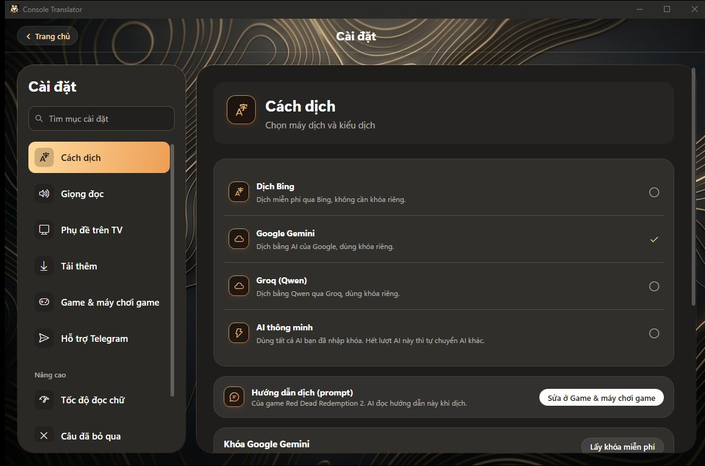
3Tạo tài khoản phụ trên PS5
PC kết nối vào PS5 bằng một tài khoản PlayStation. Dùng chung tài khoản bạn đang cầm tay cầm chơi thì tay cầm bị ngắt, nên dùng một tài khoản phụ cho app. Tài khoản chính vẫn để chơi như bình thường.
- Ở màn hình chính PS5, bấm ảnh đại diện góc phải trên cùng → Chuyển người dùng (Switch User) → Thêm người dùng (Add User).
- Đăng nhập bằng một tài khoản PlayStation khác (tạo mới miễn phí nếu chưa có).
- Chuyển sang tài khoản phụ này để làm các bước dưới.
4Bật Chơi từ xa cho tài khoản phụ
- Bấm Bật Chơi từ xa (Enable Remote Play), bật công tắc cạnh tài khoản phụ. Bật sai người thì PC không kết nối được.
- Quay lại, bật Ẩn trạng thái kết nối Chơi từ xa (Hide Remote Play Connection Status) để TV không hiện dòng "đã kết nối Chơi từ xa" khi chơi.

PX4: Settings → Remote Play Connection Settings, bật Enable Remote Play.
5Cho app tự bật PS5 khi máy đang nghỉ (nên làm)
- Giữ kết nối Internet Stay Connected to the Internet
- Cho phép bật PS5 qua mạng Enable Turning On PS5 from Network
Để PS5 ở chế độ nghỉ (đèn cam), trên PC bấm Bắt đầu dịch game là máy tự bật. Máy tắt hẳn thì phải bật bằng tay. PX4: Settings → Power Save Settings → Set Features Available in Rest Mode.
6Trên PC: tìm máy
- PC và PS5 cắm chung một mạng ở nhà (cùng router, không dùng Wi-Fi khách, tắt VPN).
- Bật PS5 (hoặc để ở chế độ nghỉ nếu đã làm bước 5).
- Trên app PC bấm Bắt đầu dịch game → Chơi trên TV, chọn game, rồi bấm Thêm người chơi.
- Chọn đúng Loại máy: PX5 hoặc PX4, bấm Tìm máy.
- Thấy Đã tìm thấy tên máy thì bấm Tiếp tục.
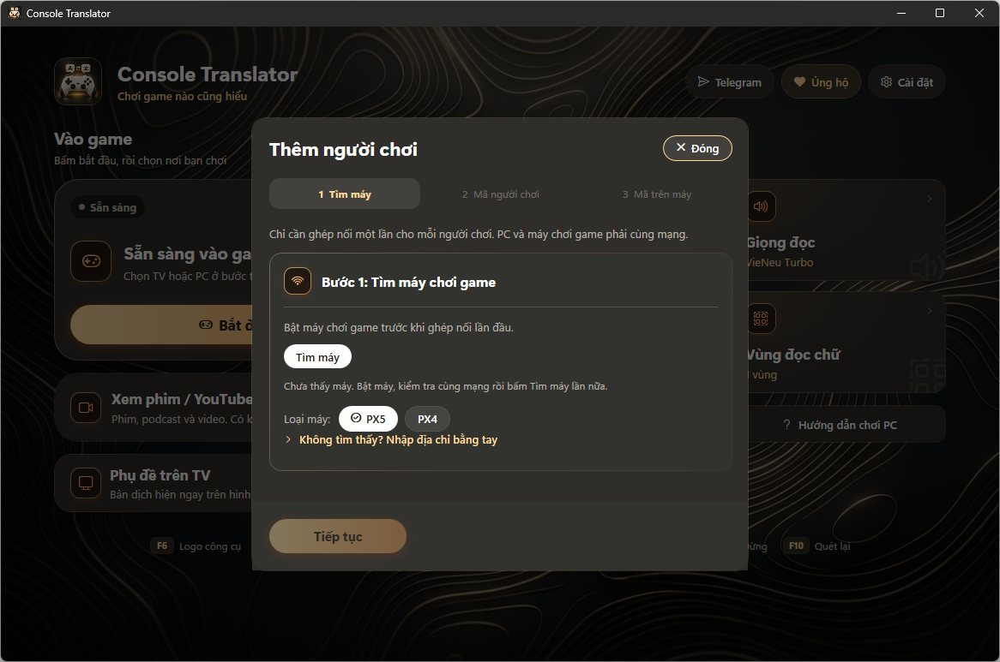
App không tìm thấy máy? Nhập địa chỉ bằng tay
- Trên PS5 vào Cài đặt (Settings) → Mạng (Network) → Trạng thái kết nối (Connection Status) → Xem trạng thái kết nối (View Connection Status).
- Tìm dòng IPv4 Address, dạng
192.168.x.x. - Trong app bấm Không tìm thấy? Nhập địa chỉ bằng tay, gõ đúng dãy số đó.
7Lấy mã người chơi của tài khoản phụ
- Trên PS5 (đang ở tài khoản phụ): bấm ảnh đại diện → Hồ sơ (Profile). Ghi lại Online ID nằm dưới tên hiển thị, đúng từng chữ.
- Trên app PC chọn Tra mã như iOS → bấm Mở trang tra mã. Trình duyệt mở id.kyozx.cloud (không cần đăng nhập).
- Gõ Online ID, bấm Tra.
- Ở ô Mã dán vào app, bấm Sao chép.
- Quay lại app, bấm Dán mã. Thấy Đã nhận mã người chơi thì bấm Tiếp tục.
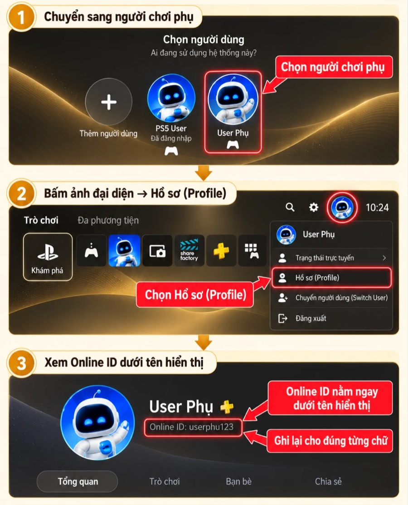
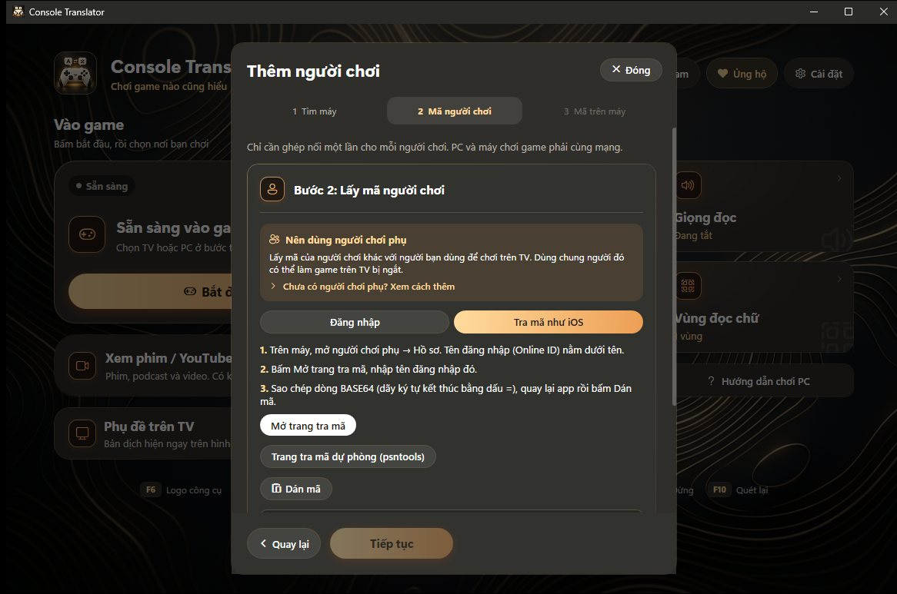
id.kyozx.cloud không vào được? Dùng trang dự phòng psntools
- Trong app bấm Trang tra mã dự phòng (psntools), hoặc mở psntools.com/psn/checker.
- Gõ Online ID, bấm Search.
- Ở dòng BASE64 (FOR REMOTE PLAY), bôi đen dãy ký tự kết thúc bằng
=→ chuột phải → Sao chép.
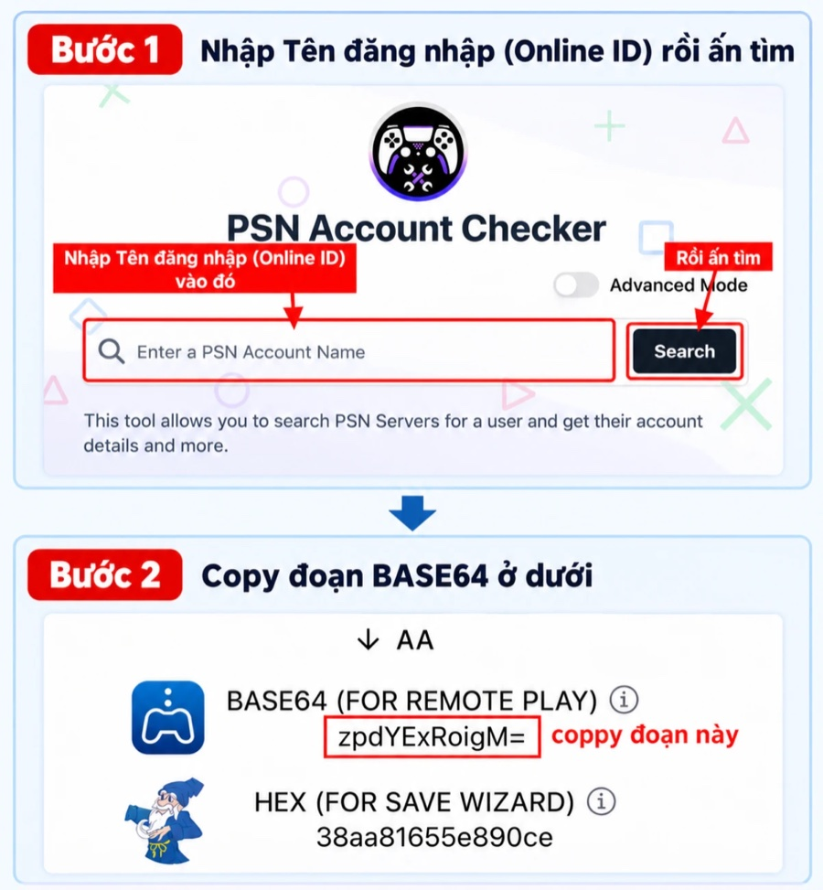
Cách khác: đăng nhập tài khoản phụ để lấy mã
- Trong app chọn Đăng nhập → Đăng nhập bằng trình duyệt, đăng nhập tài khoản phụ.
- Trình duyệt chuyển sang một trang trắng hoặc báo lỗi: bình thường. Sao chép cả liên kết trên thanh địa chỉ.
- Quay lại app, bấm Dán liên kết và lấy mã.
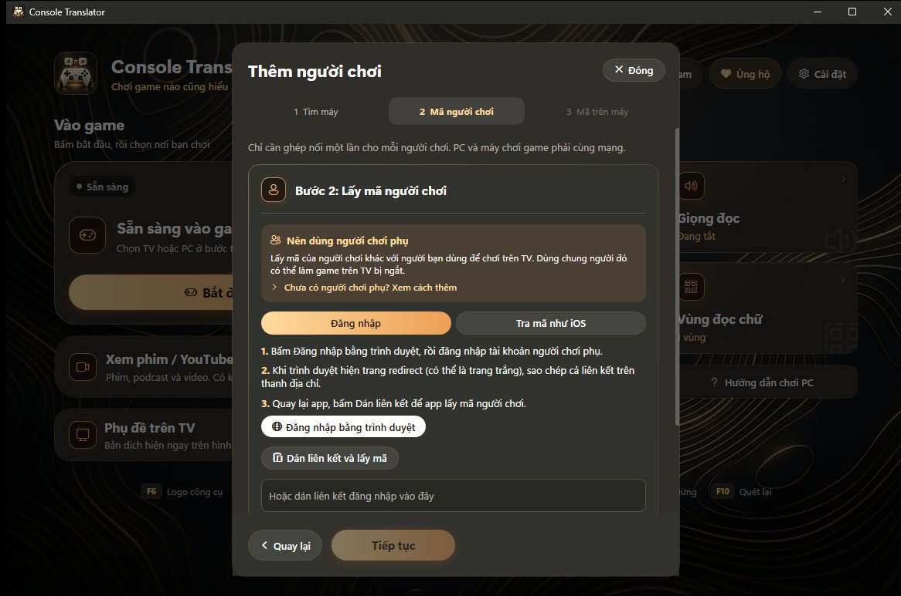
Không tìm thấy Online ID trên PS5?
- Trên PS5, cách khác: Cài đặt → Người dùng và tài khoản (Users and Accounts) → Tài khoản → Hồ sơ → Online ID.
- Trên điện thoại: mở PlayStation App, đăng nhập tài khoản phụ, bấm ảnh đại diện. Online ID nằm dưới ảnh.
Online ID là tên hiện khi chơi online, không phải email.
8Lấy mã 8 số trên PS5 và ghép nối
- Trên PS5 (vẫn ở tài khoản phụ): Cài đặt → Hệ thống → Chơi từ xa → Ghép nối thiết bị (Link Device).
- TV hiện 8 chữ số kèm thời gian còn lại.
- Trên app PC (bước 3 Mã trên máy), nhập ngay 8 số, bấm Ghép nối người chơi, chờ vài giây đến khi app báo thành công.
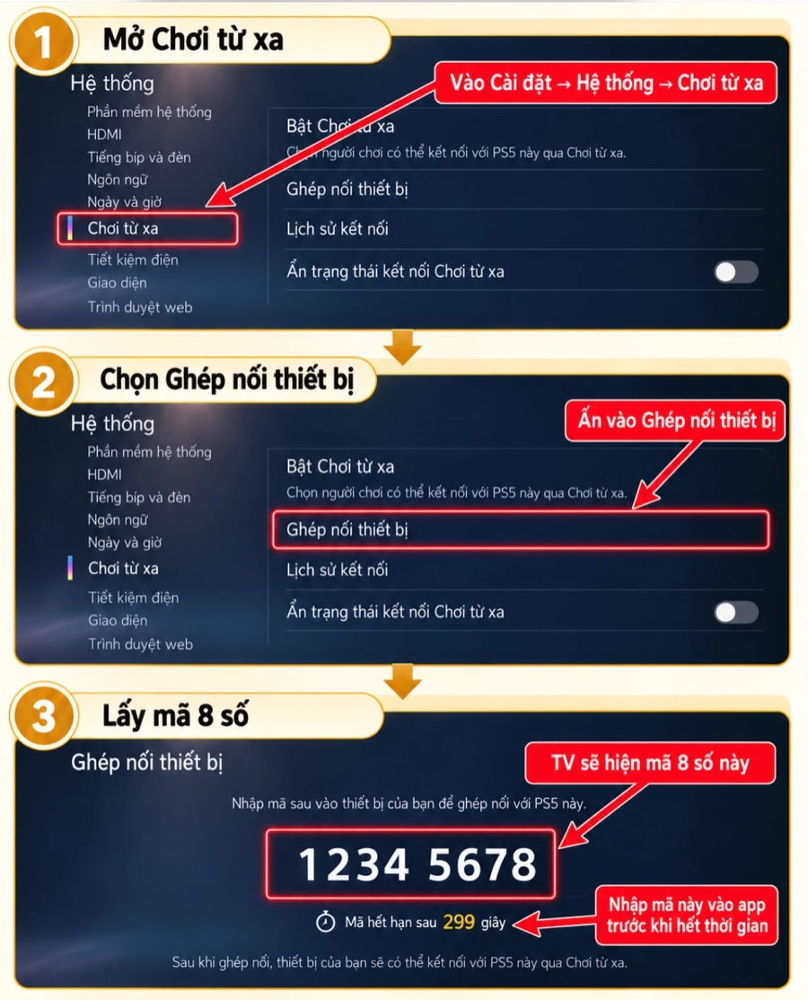
9Chơi và dịch
- Bấm Bắt đầu dịch game, chọn cách chơi:
- Chơi trên TV: máy cắm TV như bình thường, PC nhận hình qua Chơi từ xa để đọc chữ.
- Chơi trên PC: app hỏi tiếp bạn chơi gì. Game trên PC (Steam, Epic…): chọn cửa sổ game, không cần máy PS. Máy PS5 / PS4, chơi ngay trong app: xem Cách dùng → Chơi trên PC.
- Cách khác (dòng chữ nhỏ trong bảng): capture card, hoặc chiaki-ng / PXPlay.
- Chọn game bạn chơi để app dịch đúng tên nhân vật.
- Lần đầu, bấm Chỉnh vùng dịch và kéo khung ôm vừa dòng phụ đề (xem Cách dùng → Vùng đọc chữ).
- Bấm Bắt đầu dịch. Câu dịch hiện trên PC, và trên TV nếu đã ghép TV (tab Phụ đề TV).
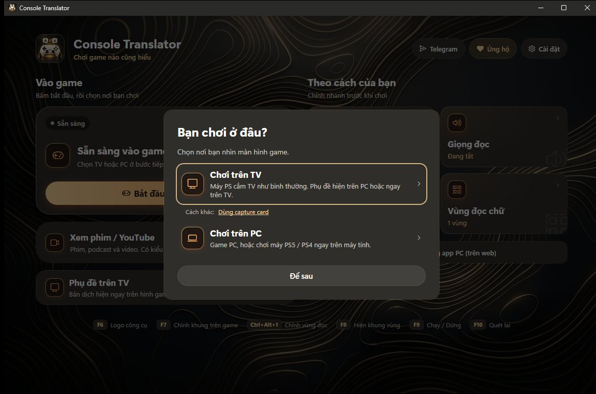
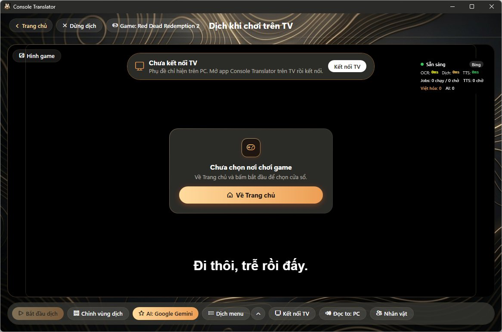
TVPhụ đề ngay trên màn hình TV
Máy chơi game vẫn cắm HDMI thẳng vào TV. Chỉ phụ đề và giọng đọc đi từ PC sang TV qua mạng nhà nên hình ảnh không giảm chất lượng hay thêm độ trễ. Không cần thì bỏ qua tab này, phụ đề vẫn hiện trên PC.
- Android TV / Google TV: được, cần Android 9 trở lên. TV nào khóa quyền Hiển thị trên ứng dụng khác thì không hiện được phụ đề.
- TV LG webOS: thử nghiệm, cần Developer Mode và mã LGTV.
- TV Samsung từ 2017 (Tizen 3.0 trở lên): thử nghiệm, cần Developer Mode, mã SSTV và tài khoản Samsung.
- TV Samsung 2016 trở về trước, Android Box, TV hệ điều hành khác: không dùng được.
Trong app PC vào Cài đặt → Phụ đề trên TV, ở mục Bạn đang dùng TV gì? chọn đúng loại TV, rồi làm theo phần của TV mình bên dưới.
Android TVCài bằng remote
Mã Downloader dùng để tải app trên TV, khác với mã ghép phụ đề. App TV tự hiện nút Cập nhật khi có bản mới.
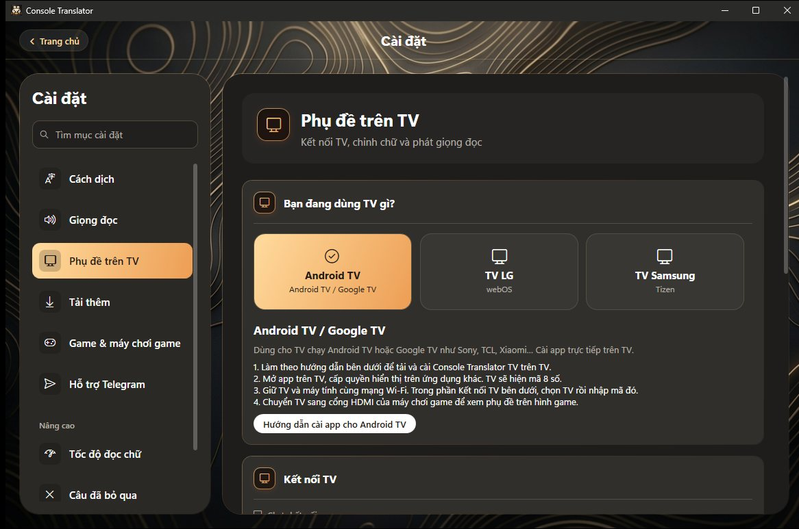
Cài app
- Trên TV, cài Downloader by AFTVnews từ Google Play.
- Vào Cài đặt → Ứng dụng → Quyền truy cập đặc biệt → Cài đặt ứng dụng không rõ nguồn, cho phép Downloader.
- Mở Downloader, nhập mã đúng loại TV ở trên, tải rồi cài file APK. Đã có bản cũ thì cài đè.
Cấp quyền và mở app
- Mở Console Translator TV, bấm Cấp quyền hiển thị trên ứng dụng khác.
- Bật quyền cho app rồi bấm Back. Nếu được hỏi, cho phép app bỏ qua tối ưu hóa pin.
- App hiện màn hình ghép nối và địa chỉ TV. Làm tiếp phần Ghép nối TV với PC.
android.permission.SYSTEM_ALERT_WINDOW → Allow. Bản Mi chỉ hiện phụ đề sau khi chuyển sang cổng HDMI.TV SamsungCài từ app PC
1. Bật Developer Mode trên TV
- Trên TV vào Home → Apps (Ứng dụng) → App Settings (Cài đặt ứng dụng).
- Bấm nút 123 (hoặc …) trên remote để hiện bàn phím số, bấm lần lượt 1 2 3 4 5.
- Bật Developer Mode → On. Ở ô Host PC IP nhập IP máy tính đang hiện trong app PC (dòng màu vàng), bấm OK.
- Rút điện TV 30 giây rồi cắm lại. Tắt bằng remote là chưa đủ.
2. Cài app từ PC
- Trên app PC chọn TV Samsung. Lần đầu bấm Tải công cụ cho TV Samsung, chờ “Công cụ đã sẵn sàng trên máy tính”.
- Nhập IP của TV (trên TV: Cài đặt → Mạng → Trạng thái mạng). Đây là IP TV, khác IP máy tính ở trên.
- Nhập mã SSTV: lấy ở bot Telegram bằng lệnh
/samsung. Máy đã kích hoạt thì để trống. - Bấm Kiểm tra TV, rồi Cài / cập nhật app TV. Trình duyệt mở trang đăng nhập Samsung: đăng nhập để cấp chứng chỉ cho đúng TV.
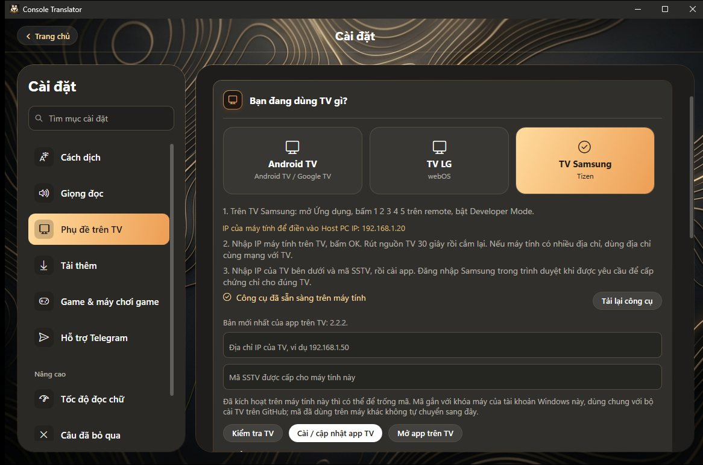
Mỗi lần chơi
TV LGCài từ app PC
1. Chuẩn bị TV (làm lần đầu)
- Tạo tài khoản tại LG Developer.
- Trên TV mở LG Content Store, cài app Developer Mode, mở và đăng nhập.
- Bật Dev Mode Status, chờ TV khởi động lại. Mở lại Developer Mode, bật Key Server.
- Để nguyên màn hình này: nó hiện IP và Passphrase (6 ký tự) của TV.
2. Cài app từ PC
- Trên app PC chọn TV LG. Lần đầu bấm Tải công cụ cho TV LG.
- Nhập IP và Passphrase đang hiện trên TV (phân biệt chữ hoa, chữ thường).
- Nhập mã LGTV lấy ở bot Telegram. Máy đã kích hoạt thì để trống.
- Bấm Kiểm tra TV, xác nhận đúng TV của bạn, rồi bấm Cài / cập nhật app TV. Chờ báo “Đã cài xong app lên TV”.
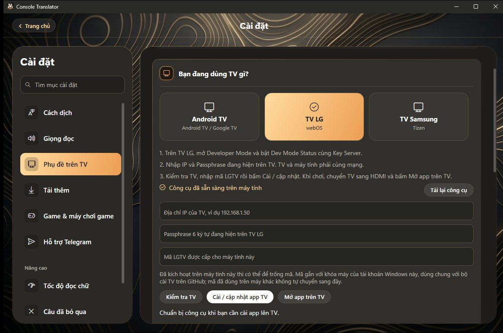
Mỗi lần chơi
Bật Tự mở app TV khi bấm Bắt đầu trong Phụ đề trên TV để app PC tự làm bước 3.
Ghép nối TV với PCDùng cho mọi loại TV
Bước 1: Mở máy PS5 và mở app trên TV
- TV Samsung, Android TV: mở app Console Translator TV trên TV.
- TV LG: trên app PC bấm Mở app trên TV.
TV hiện Địa chỉ TV và màn hình ghép nối:
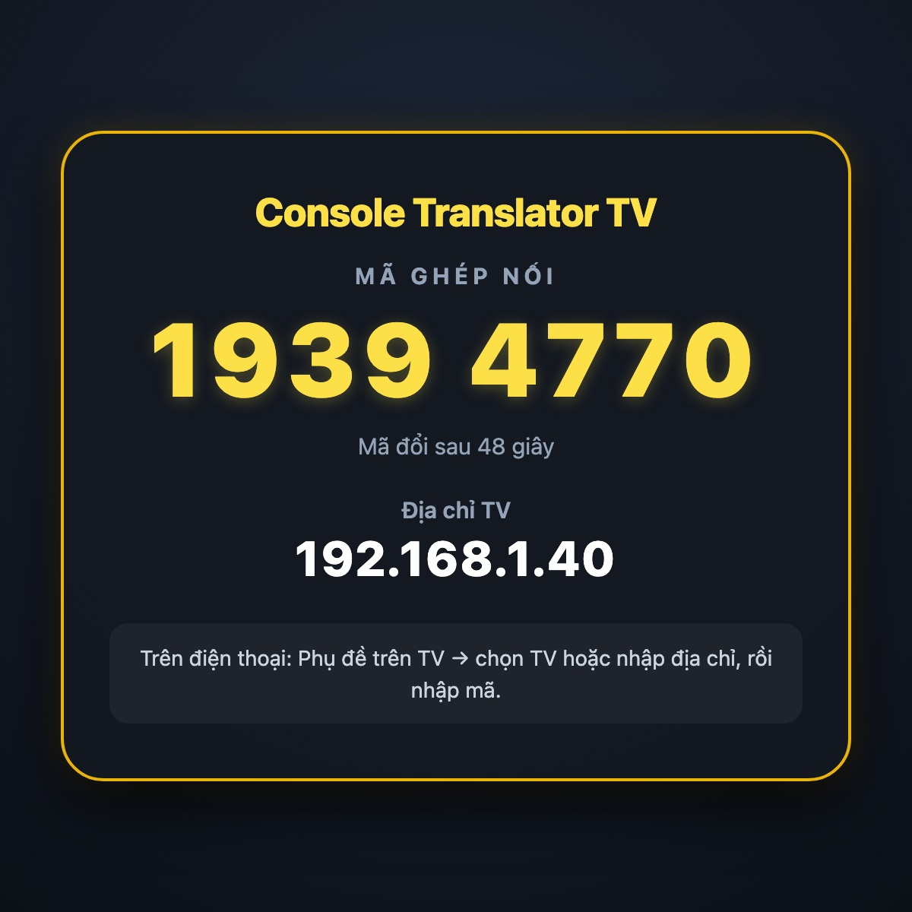
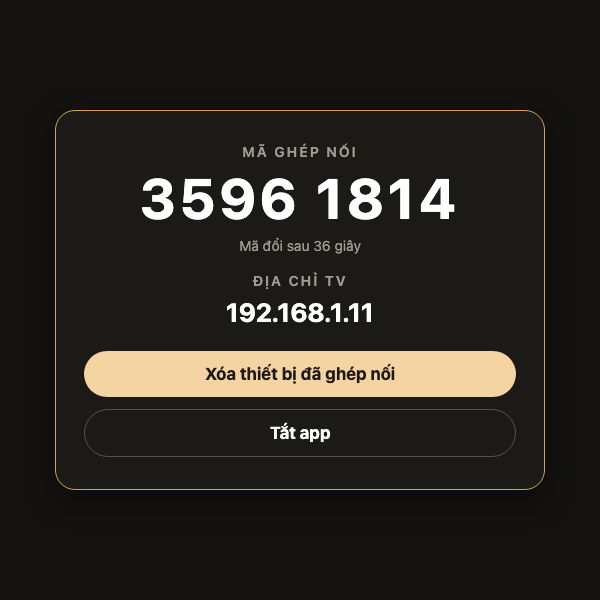
Bước 2: Trên PC, mở Kết nối TV
Vào Cài đặt → Phụ đề trên TV → mục Kết nối TV, hoặc bấm Kết nối TV trên thanh dưới màn hình dịch.
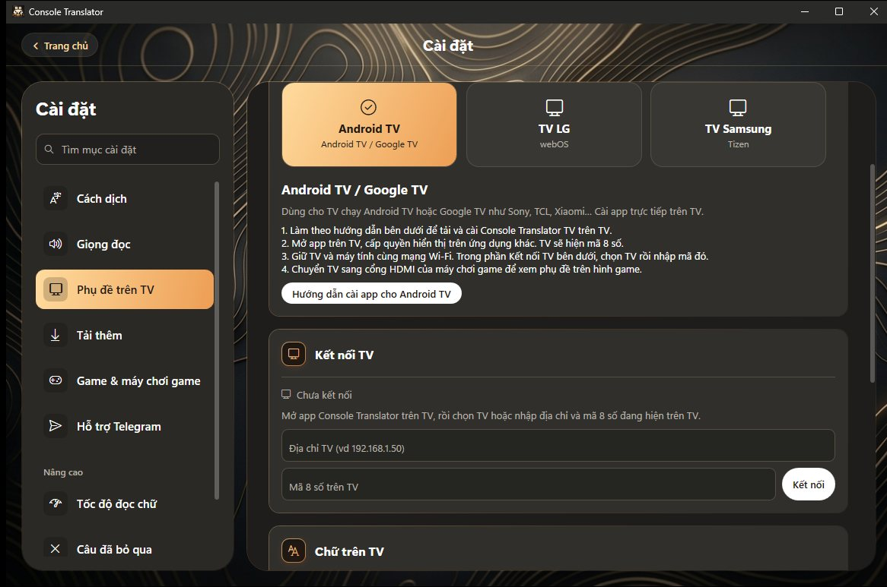
Bước 3: Chọn TV, bấm Kết nối, Đồng ý trên TV
- Chọn TV trong danh sách. Không thấy thì gõ Địa chỉ TV đang hiện trên TV.
- Bấm Kết nối. TV hỏi Đồng ý?: bấm Đồng ý bằng remote TV.
- App TV đời cũ không hỏi mà hiện mã 8 số: nhập mã vào ô Mã 8 số trên TV rồi bấm Kết nối.
- Thấy Đã kết nối là xong. Bấm Câu thử để xem phụ đề hiện trên TV.
Chuyển TV sang cổng HDMI của máy chơi game và bắt đầu dịch: phụ đề tiếng Việt nổi ngay trên hình game. Lần sau PC tự kết nối lại.
Chỉnh chữ trên TV
- Tự đặt thoại theo gameDòng dịch nằm đúng độ cao và cỡ chữ của phụ đề gốc. Tắt để tự chỉnh cỡ chữ, vị trí.
- Đè lên câu gốc trên TVCâu dịch che đúng chỗ phụ đề tiếng Anh của game.
- Phát giọng đọc ra loa TVGiọng đọc ra loa TV, máy tính im lặng. Không nghe thấy thì đổi Digital Audio Out của TV sang PCM.
Kết quả trên TV
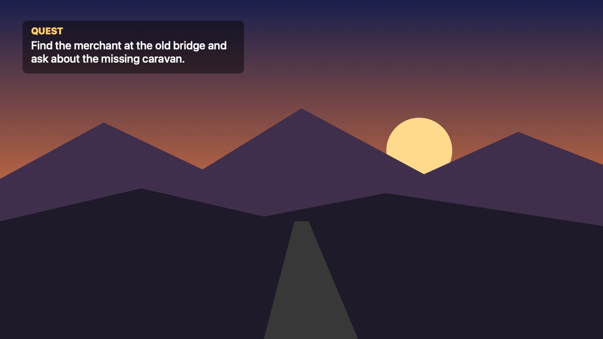
Lỗi thường gặp trên TV
- LG không kết nối khi cài: kiểm tra Developer Mode còn hạn, Key Server đang bật, IP và Passphrase mới nhất, PC cùng mạng với TV.
- Samsung không kết nối khi cài: Host PC IP trên TV là IP máy tính, ô IP trong app là IP TV; sau khi bật Developer Mode phải rút điện TV 30 giây.
- PC không thấy TV: mở app trên TV trước, TV và PC cùng mạng, rồi gõ đúng địa chỉ đang hiện trên TV.
- Phụ đề biến mất: Android TV cần bỏ tối ưu hóa pin; LG bấm lại Mở app trên TV nếu đã bấm Home; Samsung tắt liên kết thiết bị HDMI.
- Không nghe giọng đọc trên TV: đổi Digital Audio Out của TV sang PCM.
Mỗi chức năng một mục, bấm để xem.
1Kéo vùng đọc chữ đúng cách
Bước quan trọng nhất. Khung sai thì dịch sai hoặc không dịch.
- Ở màn hình chính bấm Vùng đọc chữ (hoặc phím
Ctrl+Alt+1). Chờ có hình game và phụ đề trên hình. - Kéo khung xanh Phụ đề chính chỉ vừa dòng phụ đề của nhân vật, dư một chút cho câu dài hai dòng.
- Kéo chấm ở góc để đổi cỡ. Khung sát chữ thì đọc nhanh và đúng hơn.
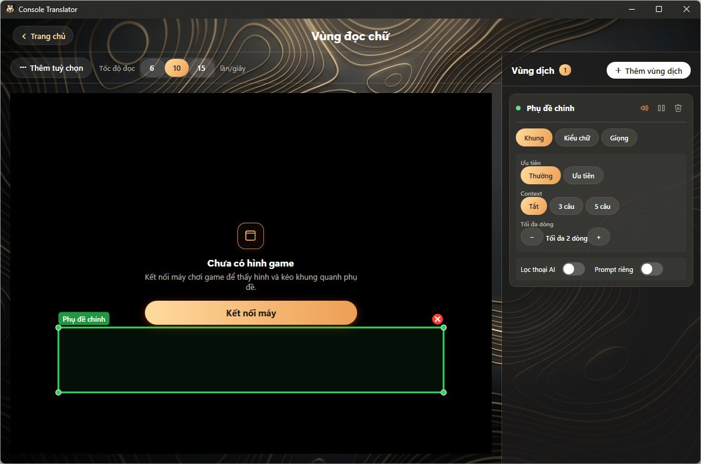
2Màn dịch và Dịch menu
Thanh dưới cùng màn dịch, từ trái sang:
- Bắt đầu dịch / Dừng.
- Chỉnh vùng dịch: kéo lại khung đọc chữ.
- AI: đổi cách dịch nhanh.
- Dịch menu: bấm khi đang mở menu, kỹ năng, túi đồ, nhiệm vụ. Bản dịch hiện ngay tại chữ gốc. Mũi tên bên cạnh mở tùy chọn: Tự động, Đè lên chữ gốc, Tự ẩn khi gặp nút, màu chữ và nền “Theo game”.
- Kết nối TV, Đọc to, Nhân vật (giọng và màu tên riêng cho từng nhân vật).
Phím tắt: F6 logo công cụ, F7 chỉnh khung trên game, F8 hiện khung vùng, F9 chạy / dừng, F10 quét lại.
3Chơi máy PS5 / PS4 trên PC ngay trong app
Không cần TV, không cần cài app khác. Dùng máy và tài khoản phụ đã ghép nối ở tab Bắt đầu. Chơi game PC thì không cần phần này: chọn Chơi trên PC → Game trên PC rồi chọn cửa sổ game.
- Cắm tay cầm vào PC (USB hoặc Bluetooth): tay Xbox, DualSense hoặc DualShock 4.
- Bấm Bắt đầu dịch game → Chơi trên PC → Máy PS5 / PS4, chơi ngay trong app, chọn game.
- App tự bật máy và mở cửa sổ chơi: hình 1080p 60 khung/giây, tiếng game ra loa PC, phụ đề đè lên.
F11hoặc nhấp đúp để toàn màn hình.
4Chơi bằng chiaki-ng / PXPlay
- Cài chiaki-ng (miễn phí) hoặc PXPlay (trả phí), mở app đó, kết nối máy và vào game.
- Trên Console Translator bấm Bắt đầu dịch game, chọn Chơi trên PC, bấm Cách khác: Dùng chiaki-ng / PXPlay, rồi Chọn cửa sổ game.
- Đã cài app rồi thì bật Tôi đã cài app, lần sau không hiện bảng này để lần sau vào thẳng bước chọn cửa sổ.
- Kéo vùng đọc chữ rồi bấm Bắt đầu dịch. Muốn đổi sang cửa sổ khác, bấm Đổi cửa sổ trên thanh màn dịch.
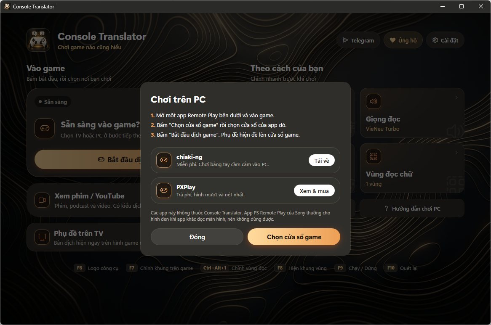
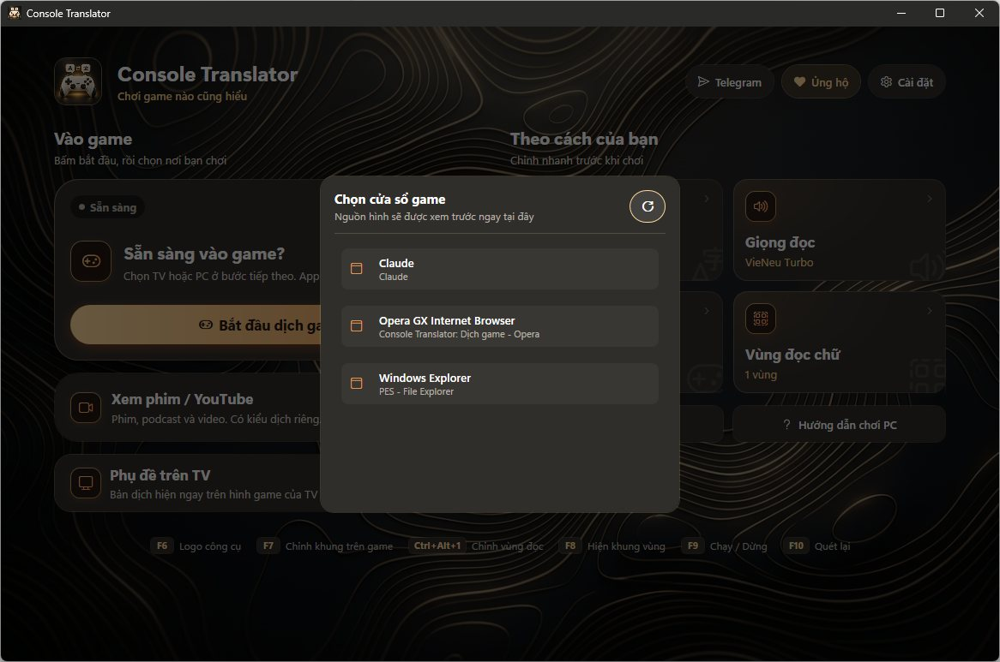
F6) → Toàn màn hình. App phóng cửa sổ ra toàn màn hình không viền, vẫn dịch và hiện phụ đề.App chỉ thấy hình đen hơn 10 giây thì báo “Không thấy hình game” kèm cách sửa. Game ở chế độ toàn màn hình độc quyền thì app tự chuyển sang không viền; không được thì chọn Borderless trong cài đặt đồ họa của game.
5Chơi bằng capture card
Hình nét, không trễ, không cần Chơi từ xa hay tài khoản phụ.
- Cắm: máy chơi game → HDMI vào capture card → HDMI ra TV (nếu chơi trên TV). Cắm USB của card vào PC.
- Đóng các app khác đang dùng card (OBS, Camera).
- Bấm Bắt đầu dịch game, bấm Cách khác: Dùng capture card dưới Chơi trên TV (vẫn chơi trên TV) hoặc trong Chơi trên PC (hình và tiếng hiện trong cửa sổ trên PC;
F11hoặc nhấp đúp để toàn màn hình). - PC có nhiều thiết bị hình (webcam…) thì app hỏi chọn đúng capture card.
6Giọng đọc
- Vào Cài đặt → Giọng đọc, chọn bộ đọc. VieNeu Turbo hay nhất; máy yếu chọn VieNeu Nano hoặc Giọng Windows.
- Lần đầu bấm tải bộ giọng (chỉ tải một lần).
- Chọn tốc độ đọc. Thoại game nhanh thì để 175% trở lên.
- Ở màn dịch bấm Đọc to để bật hoặc tắt.
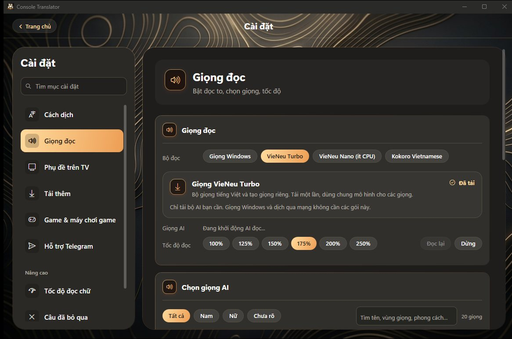
7Chọn game, tự nhận game
- Cài đặt → Game & máy chơi game, bấm game bạn chơi. Game có bản Việt hóa thì app dùng luôn bản đó. Không có game thì bấm Thêm game.
- Tự nhận ra game đang chơi: đăng nhập PlayStation để app biết bạn chơi gì và gợi ý đổi game. Không đăng nhập thì app đoán theo tên nhân vật trong phụ đề.
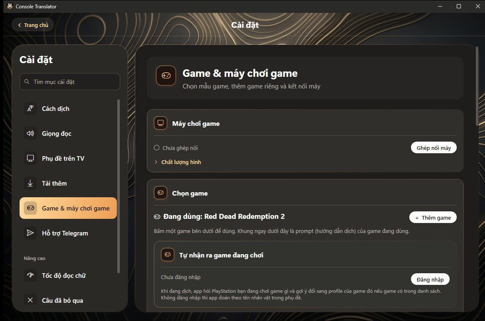
8Xem phim / YouTube
- Mở video trong trình duyệt hoặc app xem phim, bật phụ đề.
- Ở màn hình chính bấm Xem phim / YouTube, chọn kiểu nội dung và ngôn ngữ phụ đề.
- Bấm Chọn cửa sổ và bắt đầu.
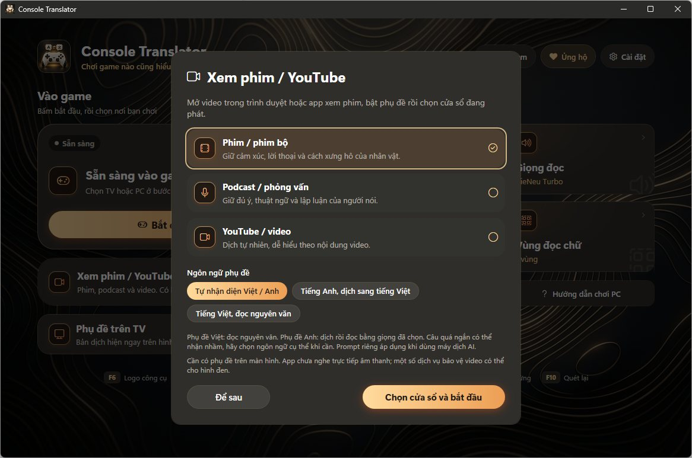
9Phát trực tiếp (OBS)
Người xem livestream thấy phụ đề tiếng Việt trên hình game.
- Trong OBS bật Tools → WebSocket Server Settings, đặt mật khẩu.
- Trên app PC vào Cài đặt → Phụ đề trên TV → Chế độ stream, nhập mật khẩu WebSocket, bấm Bật chế độ stream. App tự thêm phụ đề vào cảnh đang chọn.
Bấm vào lỗi bạn gặp để xem cách sửa.
Chọn cửa sổ chiaki-ng rồi mà không có hình (màn hình đen)
Thoát toàn màn hình của chiaki-ng (F11 hoặc nhấp đúp), rồi dùng Toàn màn hình trên logo công cụ của app (F6). Không phải do toàn màn hình thì kiểm tra game có đang hiện hình, hoặc chọn lại cửa sổ.
App không tìm thấy máy chơi game
PC và PS5 phải cùng mạng (cùng router, không Wi-Fi khách, tắt VPN). Máy phải bật, hoặc ở chế độ nghỉ có bật Giữ kết nối Internet. Vẫn không thấy thì nhập IP bằng tay (Bắt đầu → bước 6).
PS5 từ chối ghép nối
Mã người chơi (bước 7) và tài khoản đang mở trên PS5 (bước 8) phải là một. Không dùng tài khoản Khách. Mã 8 số hết hạn sau vài phút: lấy mã mới.
Tay cầm bị ngắt khi PC kết nối
Dùng tài khoản phụ để ghép nối (Bắt đầu → bước 3). Hoặc bấm nút PS, chọn lại tài khoản chính.
Không dịch hoặc dịch sai, nhảy chữ lung tung
Kéo lại khung vùng đọc chữ chỉ vừa dòng phụ đề. Chọn đúng game. Thêm khóa Gemini nếu đang dùng Bing.
Phụ đề không hiện trên TV
TV và PC cùng mạng, app trên TV đang mở và đã ghép. TV LG: mở lại bằng nút Mở app trên TV, đừng bấm Home. TV Samsung: tắt liên kết thiết bị HDMI / Anynet+. Bấm Câu thử để kiểm tra.
Capture card không có hình hoặc không có tiếng
Đóng OBS, Camera. Bật quyền Camera (và Micro cho tiếng) cho ứng dụng máy tính trong Cài đặt Windows. Rút cắm lại USB của card.
Windows chặn mở bộ cài
Bấm Thông tin thêm → Vẫn chạy. Chỉ làm với bộ cài tải từ GitHub chính thức.